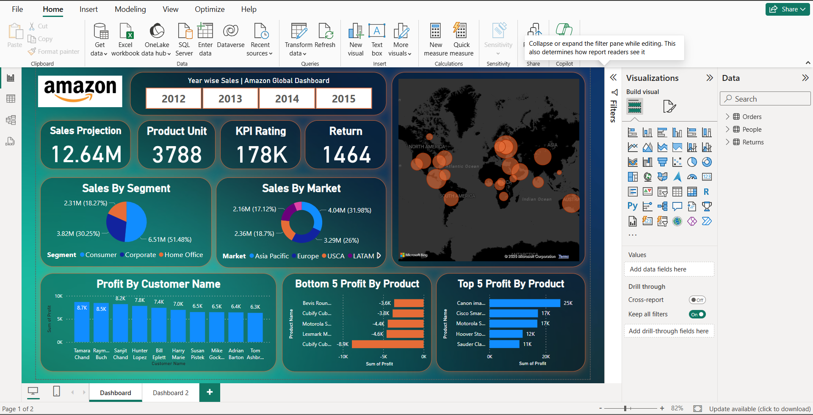

Amit Birbitte
Data Analyst
I'm an efficient and skilled professional with a strong foundation in data analysis, specializing in turning complex data into actionable insights. Passionate about problem-solving and automation, I strive to make data-driven decisions accessible and impactful for businesses.
Skills
- Python (pandas, numpy, matplotlib)
- MySQL
- Power BI
- MS Excel
- Data Cleaning
- Data Preprocessing
Projects
- Sales Dashboard (Power BI): Visualized key sales metrics and trends across regions and time periods.
- Leaf Disease Prediction (Python): Built a software that predicts the type of Disease.
Power BI Dashboard
A visual snapshot of key metrics built using Power BI.